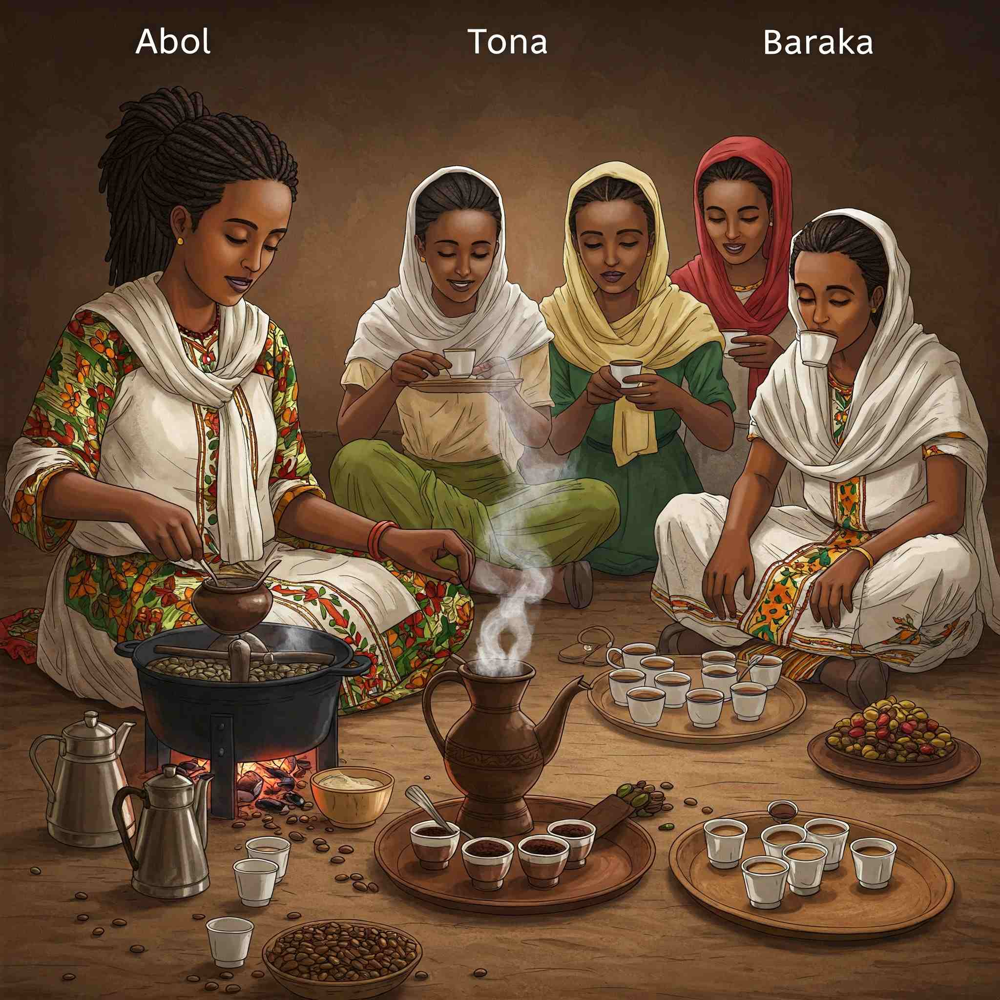
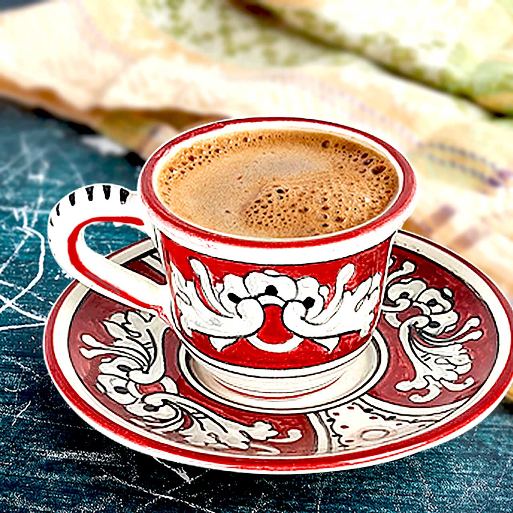
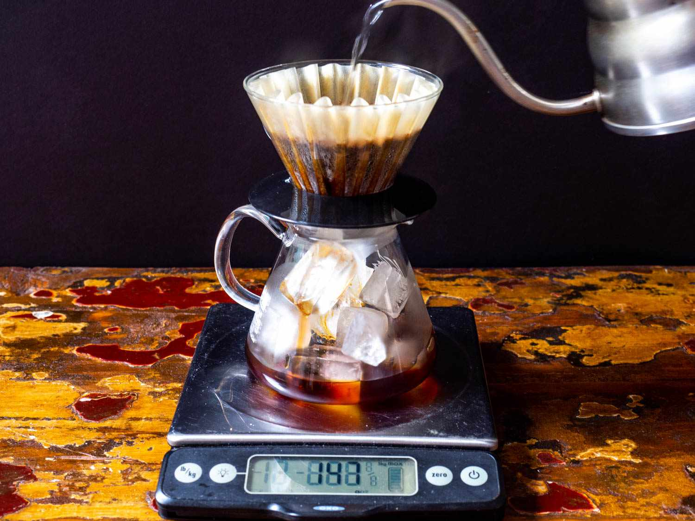
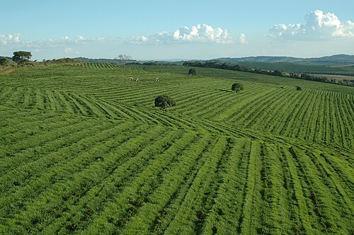
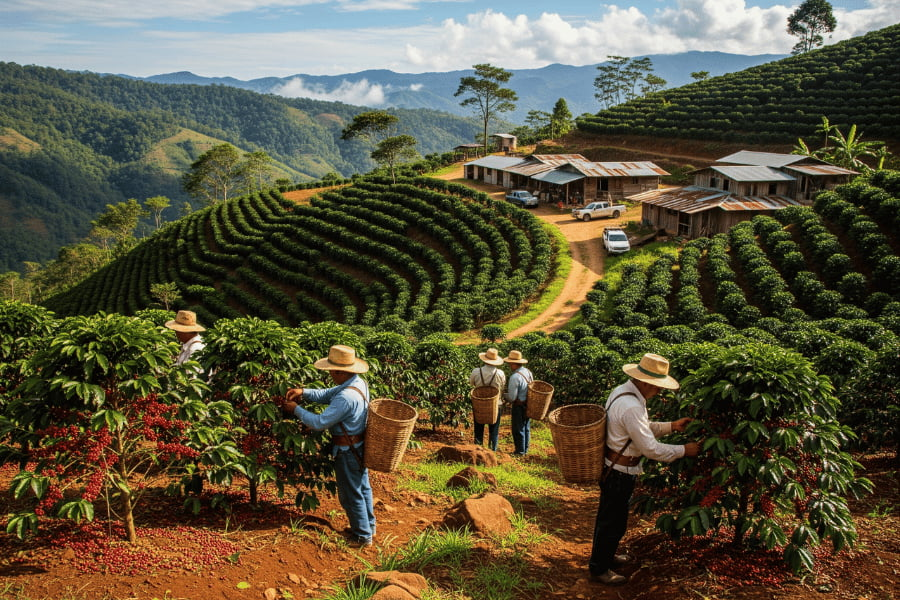

Coffee connects people across continents — from the bustling cafés of
Europe to the traditional coffee ceremonies of Africa and Asia. Let’s
explore how different cultures brew and enjoy this beloved drink. From
ceremonial traditions to modern café culture, coffee is more than a
beverage — it's a bridge between people and places.
Regional Coffee Flavours
Ethiopia — The Birthplace of Coffee

An Ethiopian coffee ceremony — a symbol of hospitality and
respect.
Coffee was first discovered in Ethiopia over a thousand years ago.
Traditional Ethiopian coffee ceremonies involve roasting fresh
beans, brewing them in a clay pot called a jebena, and
serving three rounds known as abol, tona, and
baraka — each symbolizing friendship and blessing.
Italy — The Home of Espresso

Italians enjoy espresso standing at the bar — a daily ritual.
In Italy, coffee is a way of life. The espresso was invented here,
and Italians enjoy it quickly while standing at a café counter.
Popular drinks include macchiato,
cappuccino (morning only!), and
ristretto.Coffee culture in Italy emphasizes
quality, tradition, and social connection.
Turkey — Thick and Sweet Traditions
Turkish coffee — slow-brewed in a cezve and served unfiltered.
Turkish coffee is brewed in a long-handled pot called a
cezve using finely ground beans and sugar. It’s thick,
strong, and served with foam on top. The leftover grounds are even
used for fortune-telling — a fun part of Turkish culture!
Japan — Precision and Pour-Over Perfection

Japanese pour-over coffee — clean, precise, and elegant.
Japan’s coffee culture blends art and science. Pour-over methods
like the Hario V60 and
Syphon are popular for their clarity and
precision. Tokyo’s kissaten (traditional coffee shops) offer calm
spaces for slow coffee enjoyment.
Brazil — The World’s Coffee Powerhouse

Brazil — producing one-third of the world’s coffee supply.
Brazil is the largest coffee producer globally, known for smooth,
nutty, and chocolatey flavors. Coffee farming is deeply woven into
Brazilian life, with millions of workers involved in its
production. Locals often enjoy a small, strong cup called
cafezinho, meaning “little coffee.”
Honduras — Rising Star in Coffee Production

Honduran coffee farms — nestled in mountainous regions.
Honduras has emerged as a significant coffee producer, known for
its bright acidity and fruity notes. The country’s diverse
microclimates allow for a variety of flavor profiles, making
Honduran coffee a favorite among specialty coffee enthusiasts.
Locals often appreciate the unique flavors that come from the
diverse growing regions.